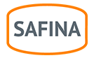
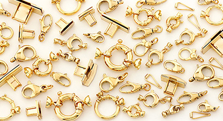
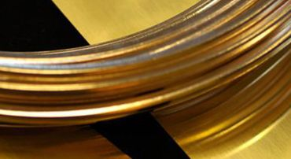
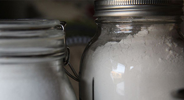
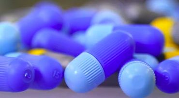

Predaj investičného zlata a rýdzeho striebra, výkup a rafinácia drahých kovov, chemikálie a výrobky pre priemysel a klenotníkov.
Investičné zlatoVýkup drahých kovovČo robíme
SAFINA SLOVAKIA je spoločnosť s dlhoročnou tradíciou v spracovaní drahých a iných neželezných kovov: od výkupu materiálov a odpadov cez rafináciu až po výrobu širokého sortimentu výrobkov z Au, Ag, Pt, Pd a Rh.

Investičné zlato, rýdze striebro a klenoty v e-shope. Predaj na pobočkách v piatich mestách.
Investičné zlato →
Vykupujeme a spracúvame elektroodpad, autokatalyzátory, fotomateriály, mince, dentálny a klenotnícky odpad.
Cenník výkupu →
Zlúčeniny striebra, zlata a platinových kovov, roztoky pre galvaniku a katalyzátory.
Prehľad chemikálií →
Zliatiny pre priemysel, strieborné spájky, kontakty, laboratórne náradie z platiny a polotovary pre klenotníkov.
Čo vyrábame →Investičné zlato
Zlato a striebro sú pre svoju stálu hodnotu odjakživa ekvivalentom peňazí. Predaj investičného zlata je oslobodený od DPH. Kúpite ho na našich predajniach v Bratislave, Košiciach, Nitre a Žiline.
Prejsť do e-shopuVýkup drahých kovov
Zlato, striebro, platinu, paládium aj rhodium: zlomkové a dentálne zlato, šperky, kontakty, platinové laboratórne riady, prach a huby i ďalšie materiály s obsahom drahých kovov.
| Drahý kov | Cena od | Cena do |
|---|---|---|
| Zlato (Au) | 101,06 | 108,67 |
| Striebro (Ag) | 1,17 | 1,45 |
| Platina (Pt) | 28,91 | 36,34 |
| Paládium (Pd) | 19,53 | 23,71 |
Cenník je prevzatý zo súčasného webu k 2. 11. 2026. Konečná cena výkupu sa určuje podľa skutočného obsahu kovu. Na novom webe ho môžeme napojiť na vašu databázu cien, aby sa aktualizoval sám.
Chémia, priemysel, klenotníci
Chemické zlúčeniny: dusičnan a chlorid strieborný, kyanidy, oxid a síran strieborný, zlúčeniny zlata, kyselina hexachloroplatičitá, chlorid rhoditý a paladnatý, zlatiace lázne AUROSAF a Pd/C katalyzátor.
Priemysel: strieborné pájky, kontakty pre elektrotechniku, striebro-paládiové spájky, nity a klince z farebných kovov, PtRh pece pre výrobu sklenených vlákien a laboratórne náradie z platiny podľa požiadaviek zákazníka.
Klenotníci: polotovary v podobe drôtov, plechov a granulátu, široký sortiment reťazí Au a Ag a mechaniky v zodpovedajúcich farbách.
Pobočky
Posledný pracovný deň v mesiaci inventúra. Pobočka v Banskej Bystrici bola zrušená.
Kontakt
SAFINA SLOVAKIA, spol. s r. o.
Turčianska 52, 821 09 Bratislava
IČO: 31677444 · IČ DPH: SK 2020485467
Telefón: +421 2 534 15 000
Mobil: +421 907 922 776
E-mail: safina@safina.sk